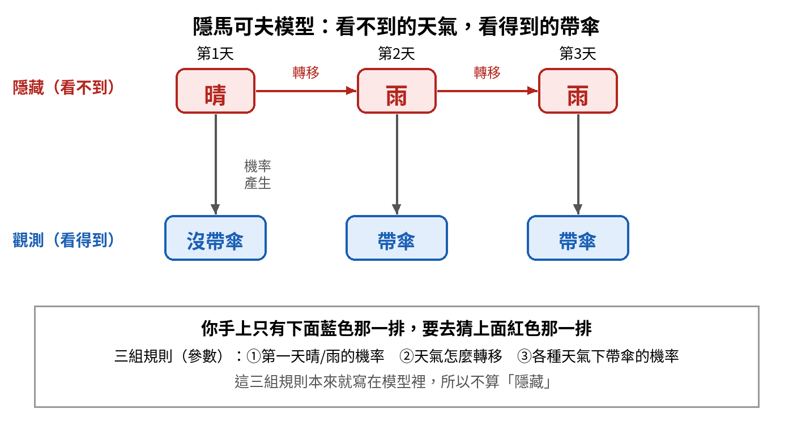
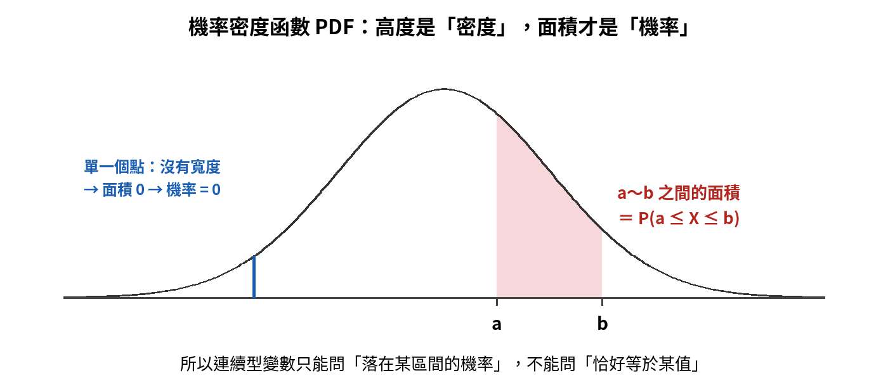
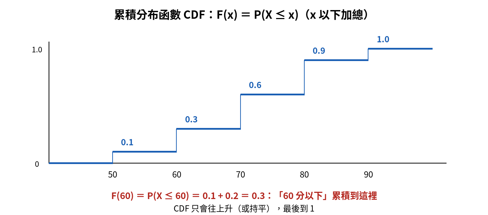
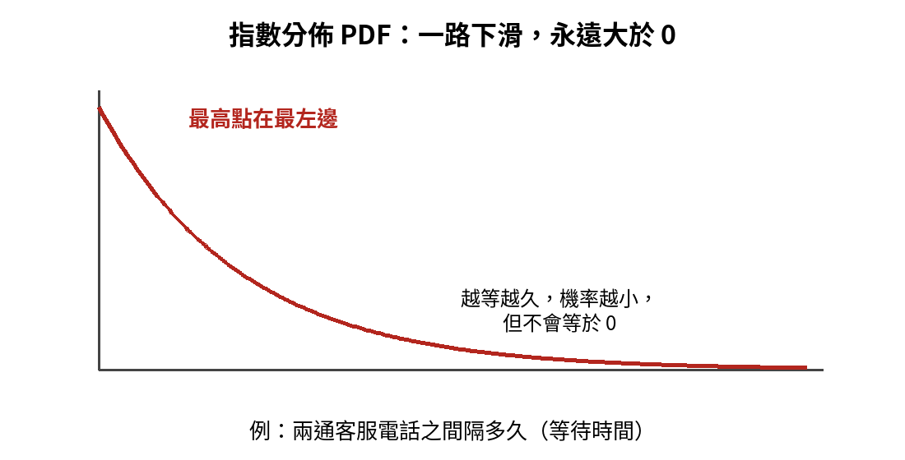
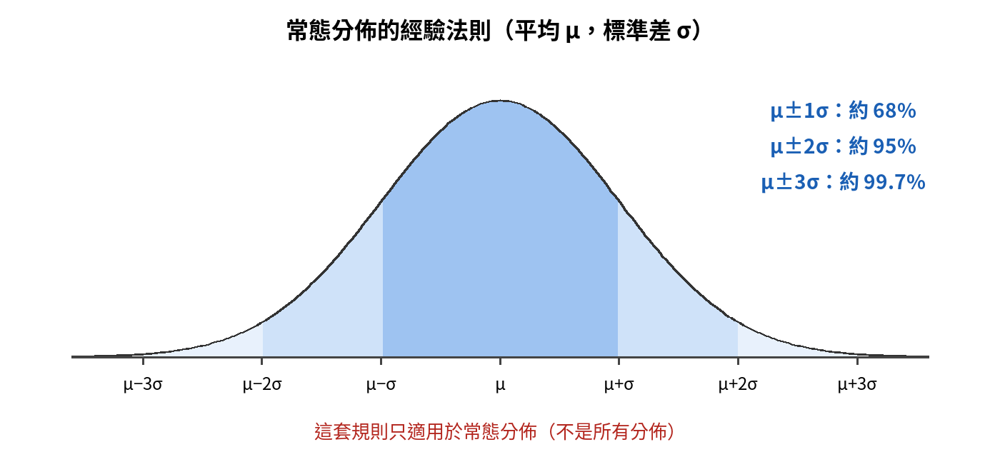
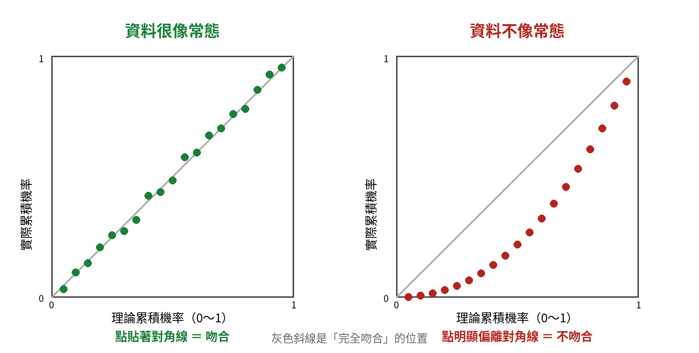
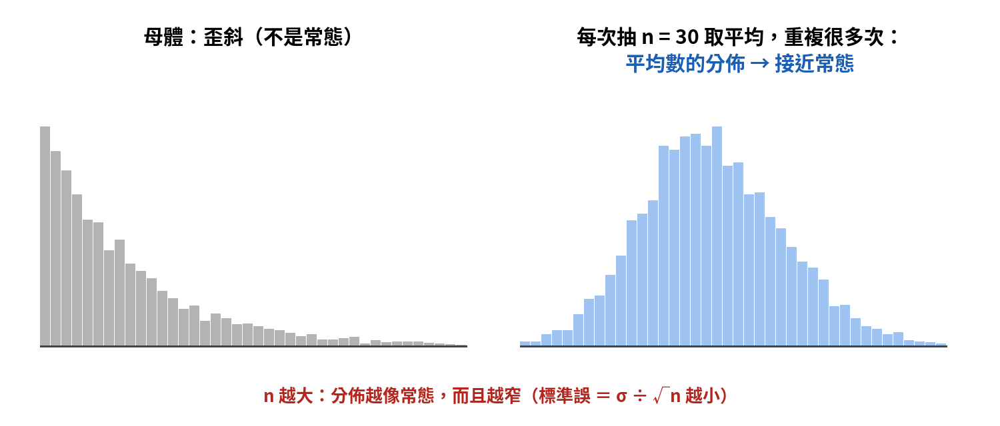

機率分佈與資料分佈模型｜觀念圖解複習
這一章是整個 L22 的底子。最容易卡住的不是單一公式，而是長得很像的名詞：互斥與獨立、PDF 與 CDF、指數與卜瓦松、中央極限定理與大數法則。六個單元都照「為什麼需要它 → 一步步搭起來 → 對照表 → 易錯提醒」整理。先看圖，再讀文字。
單元 ①機率與事件關係：範圍、互斥、獨立
為什麼需要這個概念？ 之後所有的機率計算，都建立在三塊地基上：機率能取什麼範圍、兩個事件之間是什麼關係、兩個變數之間有沒有一起變動。地基搞混，後面的公式就會用錯地方。
一步步搭起來
- 機率是一個介於 0 和 1 之間的數字：0 代表不可能發生，1 代表一定發生，0.5 是一半一半。公理化定義規定 0 ≤ P(A) ≤ 1，所以機率不會是負數，也不會超過 1。
- 兩個事件「能不能同時發生」：不能同時發生，叫互斥。
- 兩個事件「有沒有互相影響」：一個發不發生，完全不改變另一個的機率，叫獨立。
- 把「事件」換成「變數」：兩個變數有沒有一起變大、一起變小，用共變異數來量。
| 互斥 Mutually Exclusive | 獨立 Independent | |
|---|---|---|
| 意思 | 不能同時發生 | 一個事件發生與否，不影響另一個的機率 |
| 例子 | 擲一顆骰子：「出 1」和「出 2」 | 擲兩顆骰子：第一顆的點數和第二顆的點數 |
| 看什麼 | 能不能一起出現 | 有沒有改變對方的機率 |
| 公式 | P(A ∩ B) ＝ 0 | P(A ∩ B) ＝ P(A) × P(B) |
共變異數：兩個變數有沒有一起變動
| 兩個變數的關係 | 共變異數 |
|---|---|
| 一起變大、一起變小 | 正 |
| 一個變大，另一個變小 | 負 |
| 沒有線性的一起變動 | 0 |
- 兩變數獨立 → 共變異數一定是 0。互不影響，自然不會一起變動。
- 反過來不一定成立：共變異數是 0，只代表沒有「直線式」的一起變動。例如 Y ＝ X²，X 從負到正時 Y 先降後升（U 形），共變異數可以是 0，但 Y 完全由 X 決定，顯然不獨立。
- 相關係數的範圍是 −1 到 1，那是共變異數「標準化」之後的版本；兩個變異數相乘 Var(X) × Var(Y) 則是另一個東西，不是共變異數。
單元 ②貝氏定理與機率模型：貝氏分類器、HMM、GMM
為什麼需要這個概念？ 機器學習很多時候在做同一件事：看到新證據，更新原本的判斷。貝氏定理是這件事的基本公式；貝氏分類器、隱馬可夫模型把它用在不同情境；高斯混合模型則是用機率來分群。
貝氏定理：看到證據後更新判斷
用垃圾信當例子：信箱有 1000 封信，其中 200 封是垃圾信。看到一封信寫著「免費」，它是垃圾信的機率有多大？
| 名稱 | 白話 | 這個例子 |
|---|---|---|
| 事前機率 Prior | 還沒看到證據前，原本的機率 | 垃圾信占 200 ÷ 1000 ＝ 20% |
| 概度 Likelihood | 如果是垃圾信，出現這個證據的機率 | 垃圾信裡 80% 有「免費」→ 160 封 |
| 證據 Evidence | 這個證據整體出現的機率 | 正常信 800 封中 10% 有「免費」→ 80 封；合計 240 封，占 24% |
| 事後機率 Posterior | 看到證據後，更新過的機率 | 160 ÷ 240 ≈ 66.7% |
公式：事後 ＝ 事前 × 概度 ÷ 證據。代入：0.2 × 0.8 ÷ 0.24 ≈ 0.667。
貝氏分類器為什麼叫「天真」
- 問題：判斷一封信是不是垃圾信，要同時看很多特徵（有沒有「免費」、有沒有「中獎」……）。特徵彼此有關聯的話，機率非常難算。
- 天真的做法：假設在已知類別的條件下，各特徵彼此獨立。這樣每個特徵各算各的機率，再相乘就好。
- 例子：垃圾信裡有 60% 含「免費」、50% 含「中獎」。假設條件獨立，垃圾信裡兩個字都有的比例估成 0.6 × 0.5 ＝ 30%。
- 代價：計算大幅簡化，但現實中特徵常常有關聯，這個假設不一定成立，結果可能不夠準。
隱馬可夫模型 HMM：看線索，猜看不到的真相
一句話：有一排你看不到的真相，每一個真相會露出一個你看得到的線索，你要靠線索去推真相。

| 例子 | 看得到嗎 | |
|---|---|---|
| 狀態（隱藏） | 外面的天氣：晴、雨 | 看不到，所以叫「隱藏」 |
| 觀測（輸出） | 朋友有沒有帶傘 | 看得到 |
| 規則（參數） | 初始機率、轉移機率、輸出機率 | 寫在模型裡，不是隱藏的東西 |
「馬可夫」是附加的規則：明天的狀態只跟今天有關，不用管更早以前。
高斯混合模型 GMM：沒有標籤也能分群
| 監督式學習 | 非監督式學習 | |
|---|---|---|
| 資料有沒有答案（標籤） | 有，例如每封信已標好「垃圾／正常」 | 沒有，只有資料本身 |
| 做什麼 | 學會預測答案（分類、迴歸） | 找出資料自己的結構，例如分群 |
GMM 的想法：把資料看成「好幾個常態分佈混在一起」，再用機率判斷每一筆資料比較可能屬於哪一群。例如把一群人的身高丟進去，它會自己分出偏高和偏矮兩堆，過程中沒有人事先告訴它任何標籤。所以 GMM 屬於非監督式的聚類。
單元 ③期望值與變異數
為什麼需要這個概念？ 描述一個機率分佈，最基本的兩個數字是：長期平均落在哪裡（期望值），以及有多分散（變異數）。後面的二項、卜瓦松、常態，都會用這兩個數字來介紹。
一步步搭起來
- 期望值 E[X]：每個可能值乘上它的機率，再加起來，也就是加權平均。
- 變異數的定義：Var(X) ＝ E[(X − E[X])²]，先算每個值離平均多遠，平方後再取平均。
- 變異數的化簡式：Var(X) ＝ E[X²] − (E[X])²，平方的平均，減去平均的平方。兩種寫法結果一樣。
用一個小例子驗算：X 取 1、2、3，機率分別是 0.2、0.5、0.3。
| 步驟 | 算式 | 結果 |
|---|---|---|
| 期望值 E[X] | 1×0.2 ＋ 2×0.5 ＋ 3×0.3 | 2.1 |
| E[X²] | 1×0.2 ＋ 4×0.5 ＋ 9×0.3 | 4.9 |
| 化簡式 | 4.9 − 2.1² ＝ 4.9 − 4.41 | 0.49 |
| 定義式 | 0.2×(1−2.1)² ＋ 0.5×(2−2.1)² ＋ 0.3×(3−2.1)² | 0.242 ＋ 0.005 ＋ 0.243 ＝ 0.49 |
每個值乘上常數，或加上常數
例：全班零用錢平均 70 元，每個人都調成原本的 1.1 倍，平均就變成 70 × 1.1 ＝ 77 元。
| 做了什麼 | 期望值變成 | 變異數變成 |
|---|---|---|
| 每個值乘以 c | c × E[X] | c² × Var(X) |
| 每個值加上 c | E[X] ＋ c | 不變（整批平移，分散程度一樣） |
二項分佈的平均與變異數
二項分佈 B(n, p)：做 n 次獨立試驗，每次成功機率是 p，數成功了幾次。
| 公式 | 例：n＝20、p＝0.5 | 例：n＝10、p＝0.8 | |
|---|---|---|---|
| 平均數 | np | 20 × 0.5 ＝ 10 | 10 × 0.8 ＝ 8 |
| 變異數 | np(1 − p) | 20 × 0.5 × 0.5 ＝ 5 | 10 × 0.8 × 0.2 ＝ 1.6 |
- 只做 1 次（n ＝ 1）就是伯努利分佈：平均 p、變異數 p(1 − p)。
- 記法：二項的變異數 ＝ 平均數 × (1 − p)，所以一定比平均數小。
單元 ④PDF、CDF 與常見分佈
為什麼需要這個概念？ 這一塊反覆在問兩件事：這個機率函數畫出來長怎樣、代表什麼；以及眼前這個情境該用哪一個分佈。只要把「高度 vs 面積」「多久 vs 幾次」分清楚，大部分就能判斷。
PDF：高度是密度，面積才是機率

- 連續型變數可以取無限多個值，所以剛好等於某一個點的機率是 0。
- 只能問「落在某個區間」的機率，答案是那段區間曲線下的面積（也就是 PDF 在 [a, b] 上的積分）。
- PDF 的高度叫「密度」，可以大於 1；但整條曲線下的總面積一定等於 1。
均勻分佈 U(a, b)：區間內每個位置一樣可能，所以 PDF 是一條水平線，畫出來是一個長方形。寬是 b − a，面積要等於 1，所以高度一定是 1 ÷ (b − a)；區間外的高度是 0。
CDF：累積到這裡有多少
CDF 的定義：F(x) ＝ P(X ≤ x)，也就是「x 以下」的機率全部加起來。

- CDF 從 0 開始，只會往上升或持平，最後到 1。
- 注意是「小於等於 x」，不是「剛好等於 x」，也不是「大於 x」。
| 函數 | 回答的問題 | 適用 |
|---|---|---|
| PMF 機率質量函數 | 剛好等於 x 的機率 P(X ＝ x) | 離散型 |
| PDF 機率密度函數 | 曲線高度（密度），面積才是機率 | 連續型 |
| CDF 累積分布函數 | x 以下的機率 P(X ≤ x) | 離散型、連續型都有 |
符號：大寫是累積，小寫是高度
| 意思 | 一般分佈 | 標準常態分佈 |
|---|---|---|
| PDF（曲線高度） | 小寫 f(x) | 小寫 φ(z) |
| CDF（累積機率） | 大寫 F(x) | 大寫 Φ(z) |
容易混進來的符號：Γ(z) 是伽瑪函數，B(n, p) 是二項分佈的寫法，兩者都不是常態的 PDF 或 CDF。
指數分佈：等待時間與壽命

- 用途：描述「要等多久」或「能撐多久」，例如兩通客服電話之間隔多久、燈泡能亮多久。
- 形狀：最高點在最左邊，一路往下滑，而且永遠大於 0（單調遞減且恆為正）。
- 對照：對稱的鐘形是常態分佈；一條水平線是均勻分佈。
問「多久」還是「幾次」？
| 情境在問 | 資料型態 | 用哪個分佈 | 例子 |
|---|---|---|---|
| 多久（時間長度） | 連續、不會是負數 | 指數分佈、韋伯分佈 | 燈泡壽命、下一位客人要等多久 |
| 幾次（次數，沒有上限） | 整數 0、1、2…… | 卜瓦松分佈 | 一小時內進來幾位客人 |
| n 次裡成功幾次 | 整數 0 到 n | 二項分佈 | 抽 10 個產品有幾個合格 |
卜瓦松分佈：λ 要配合時間長度
- 卜瓦松分佈描述「一段時間內發生幾次」，λ 是這段時間的平均次數。
- λ 要先換算成你問的那段時間：平均每 10 分鐘進來 2 位客人，問 30 分鐘 → λ ＝ 2 × 3 ＝ 6；問 5 分鐘 → λ ＝ 1。
- 公式 P(X ＝ k) ＝ λk × e−λ ÷ k!。例：λ ＝ 6、k ＝ 5，算出來約 0.16。考試通常不用手算，重點是認出「次數 → 卜瓦松」並把 λ 換算對。
單元 ⑤常態分佈與診斷圖
為什麼需要這個概念？ 常態分佈是統計裡最重要的分佈，很多方法都假設資料接近常態。所以要知道四件事：它長什麼樣、怎麼標準化、有哪些現成的比例可以用，以及怎麼檢查手上的資料到底像不像常態。
一步步搭起來
- 形狀：左右對稱的鐘形，峰值在平均數 μ，平均數、中位數、眾數三者重合。
- 兩個參數決定一切：μ 決定中心在哪，σ 決定胖瘦。一般常態的 μ 是多少，峰值就在多少，不一定是 0。
- 標準常態分佈：規定 μ ＝ 0、σ ＝ 1。「標準」的意思就是這兩個數字固定，不隨資料改變。
- 標準化（Z 分數）：Z ＝ (X − μ) ÷ σ，先減平均，再除標準差，任何常態都能換成標準常態來查表。
| 例子 | 算式 | 意思 |
|---|---|---|
| μ＝50、σ＝10、X＝70 | (70 − 50) ÷ 10 ＝ 2 | 比平均高 2 個標準差 |
| μ＝50、σ＝10、X＝40 | (40 − 50) ÷ 10 ＝ −1 | 比平均低 1 個標準差 |
經驗法則：68、95、99.7

| 範圍 | 約占多少資料 |
|---|---|
| μ ± 1σ | 約 68% |
| μ ± 2σ | 約 95% |
| μ ± 3σ | 約 99.7% |
這套比例只適用常態分佈。資料不是常態時，改用柴比雪夫不等式：落在 μ ± kσ 之內的比例至少是 1 − 1/k²，例如 k ＝ 2 時至少 75%。
P-P 圖與 Q-Q 圖：檢查資料像不像常態

| P-P 圖 | Q-Q 圖 | |
|---|---|---|
| 兩條軸畫什麼 | 累積機率（理論 vs 實際），範圍都是 0 到 1 | 分位數（理論分位數 vs 樣本分位數），是實際的數值 |
| 怎麼看 | 點貼著對角線 → 吻合 | 點貼著一直線 → 吻合 |
| 用途 | 兩者都在檢查樣本是否接近某個理論分佈（最常是常態） | |
P-P 圖的點是怎麼算出來的？用前面學過的 Φ(z)。以 10 位同學的成績示範（平均 71、標準差約 11.8）：
| 分數 | z | 理論累積 Φ(z) | 實際累積（名次 ÷ 10） |
|---|---|---|---|
| 52 | −1.60 | 0.05 | 0.1 |
| 58 | −1.10 | 0.14 | 0.2 |
| 63 | −0.68 | 0.25 | 0.3 |
| 67 | −0.34 | 0.37 | 0.4 |
| 70 | −0.08 | 0.47 | 0.5 |
| 72 | 0.08 | 0.53 | 0.6 |
| 75 | 0.34 | 0.63 | 0.7 |
| 78 | 0.59 | 0.72 | 0.8 |
| 83 | 1.01 | 0.84 | 0.9 |
| 92 | 1.77 | 0.96 | 1.0 |
每一列就是一個點（橫軸＝理論累積，縱軸＝實際累積）。兩欄數字都很接近，點就會貼著對角線，代表資料很像常態。實務上實際累積常用（名次 − 0.5）÷ n 做修正，這裡為了好懂直接用名次 ÷ n。
單元 ⑥抽樣、推論與估計：CLT、大數法則、MLE、蒙地卡羅
為什麼需要這個概念？ 我們通常只拿得到樣本，卻想知道母體。這一組觀念就是樣本和母體之間的橋：樣本平均數會分佈成什麼樣子、抽越多會不會越準、怎麼從資料估計參數，以及算不出來時怎麼用隨機模擬去估。
中央極限定理 CLT：平均數的分佈會變成常態

- 從母體抽 n 個樣本，算一次平均數。
- 重複很多次，就會得到很多個「樣本平均數」。
- 把這些平均數畫成直方圖，它會越來越接近常態，即使母體本身歪斜、不是常態。
- 前提：樣本彼此獨立且來自同一個分佈（i.i.d.），母體變異數有限，而且 n 要夠大。母體不必是常態，也不需要事先知道母體標準差。
- n 越大，平均數的分佈越窄：標準誤 ＝ σ ÷ √n 會變小。抽越多，平均越穩定，而且仍然以母體平均數為中心。
大數法則 LLN：抽越多，平均越接近真相
核心：獨立重複試驗的次數越來越多，樣本平均數會收斂到母體的期望值。例如公正骰子的期望值是 3.5，只擲 3 次平均可能差很多，擲一萬次平均就會非常接近 3.5。
| 大數法則 LLN | 中央極限定理 CLT | |
|---|---|---|
| 講什麼 | 樣本平均數會收斂到哪裡（母體期望值） | 樣本平均數的分佈長什麼樣（接近常態） |
| 關鍵詞 | 次數趨近無窮大、收斂 | 分佈、趨近常態、標準誤 |
最大概度估計 MLE：選最能解釋資料的參數
想法：手上有一批資料，想猜產生它的參數。MLE 選的是讓「剛好看到這批資料」的機率最大的那組參數。
例：丟一枚硬幣 10 次，看到 7 次正面。正面機率 p 該猜多少？把不同的 p 代進去，算「10 次剛好 7 次正面」的機率：
| 猜的 p | 10 次剛好 7 次正面的機率 | 結果 |
|---|---|---|
| 0.5 | 120 × 0.5⁷ × 0.5³ ≈ 0.117 | |
| 0.7 | 120 × 0.7⁷ × 0.3³ ≈ 0.267 | 最大，所以 MLE 選 p ＝ 0.7 |
| 0.9 | 120 × 0.9⁷ × 0.1³ ≈ 0.057 |
| 估計方法 | 選參數的標準 |
|---|---|
| 最大概度估計 MLE | 讓觀測資料的聯合機率（概度）最大 |
| 最大後驗估計 MAP | 讓後驗機率最大，會把事前機率也算進去，是貝氏的做法 |
| 最小平方法 | 讓誤差平方和最小 |
蒙地卡羅方法：算不出來，就大量隨機抽樣去估
核心：用大量的隨機抽樣，去估計很難直接算出來的結果。例：想估計圓周率 π，在一個正方形裡隨機丟一萬個點，數有多少落在內接的四分之一圓裡，這個比例乘以 4 就是 π 的近似值。點丟得越多越準，背後撐腰的就是大數法則。
總整理本章要記的十六句話
- 機率最小 0、最大 1，不會是負數，也不會超過 1。
- 互斥＝不能同時發生；獨立＝互不影響。擲一顆骰子出 1 和出 2，互斥但不獨立。
- 兩變數獨立 → 共變異數 ＝ 0；反過來不一定成立。
- 貝氏：事後 ＝ 事前 × 概度 ÷ 證據；概度和事後不一樣。
- 貝氏分類器的天真假設：已知類別後，各特徵條件獨立，所以機率可以相乘。
- HMM：隱藏的是狀態；轉移、輸出、初始分佈是參數，不隱藏。
- GMM：非監督式分群，把資料看成好幾個常態混在一起。
- E[cX] ＝ c × E[X]；Var(X) ＝ E[X²] − (E[X])²。
- 二項：平均 np、變異數 np(1 − p)；平均等於變異數的是卜瓦松。
- PDF 的面積才是機率，連續型單點機率 ＝ 0；CDF ＝ P(X ≤ x)，只會往上升到 1。
- 大寫＝累積，小寫＝高度：Φ 是標準常態 CDF，φ 是標準常態 PDF。
- 均勻 U(a, b) 的 PDF 高度 ＝ 1 ÷ (b − a)；指數分佈一路下滑且恆為正。
- 問「多久」用指數（或韋伯），問「幾次」用卜瓦松；卜瓦松的 λ 要配合時間長度換算。
- 常態：峰值在 μ；標準常態 μ ＝ 0、σ ＝ 1；經驗法則 68%、95%、99.7%；Z ＝ (X − μ) ÷ σ。
- P-P 圖兩軸都是累積機率；Q-Q 圖畫分位數；兩者都在檢查資料像不像某個理論分佈。
- CLT：i.i.d. 且 n 夠大，平均數的分佈趨近常態、標準誤 σ ÷ √n 變小；大數法則：平均收斂到期望值；MLE：讓資料出現機率最大的參數。
其他章：L22 觀念複習總目錄